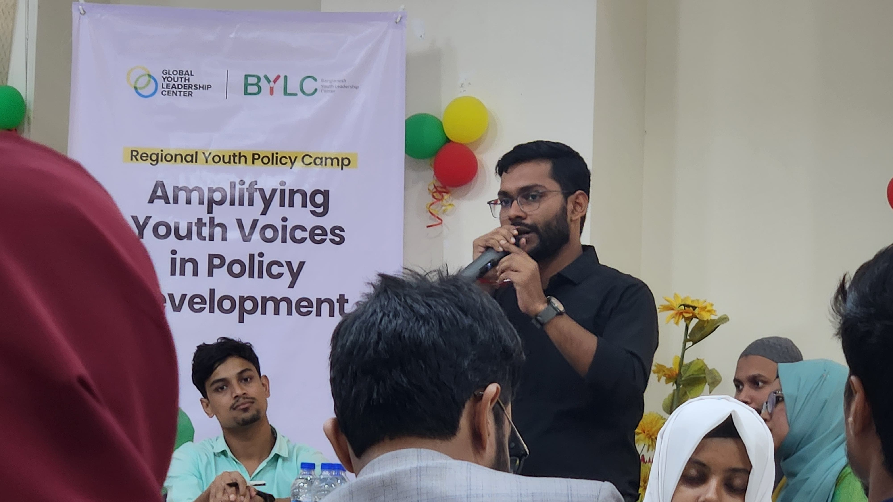

Activities
Our Events & Activities

TEDx Bangladesh Agricultural University
📅 February 22, 2025
A flagship TEDx event that brought together inspiring speakers and innovative ideas at BAU.

Career Crossroads: Path to Success
📅 May 24, 2025
BAUCC, in collaboration with Career Bridge and ACE – A Centre for English, organized a career-focused session titled “Career Crossroads: Path to Success”. The program aimed to guide students in exploring career opportunities and developing practical strategies to achieve their aspirations.
The session was conducted by Ariful Haque Shoeb, Instructor at ACE – A Centre for English, and Raisa Anjum Elma, Senior Counsellor from Career Bridge. Their insightful presentations combined real-world expertise with actionable advice, inspiring participants to think bigger and take meaningful steps toward their goals.
As a gesture of gratitude, BAUCC presented tokens of honor to the guest speakers, handed over by Prof. Dr. Md. Shahidur Rahman, Vice President of BAUCC, recognizing their valuable contribution and partnership.
The event was a great success, reinforcing BAUCC’s commitment to empowering students through professional guidance and collaborative initiatives.

Youth for Climate & Food Action – Youth Convention on Climate Change & Food Systems
📅 June 28, 2025
BAUCC proudly hosted the Youth Convention on Climate Change & Food Systems, organized by the Ministry of Environment, Forest and Climate Change and supported by the Global Alliance for Improved Nutrition (GAIN). The convention brought together over 150 students from Bangladesh Agricultural University, Jatiya Kabi Kazi Nazrul Islam University, Ananda Mohan College, and other leading youth clubs of the Mymensingh region.
The program featured a dynamic panel discussion and open Q&A session, where students engaged directly with experts from agriculture, food, and environment sectors. Discussions centered on pressing issues such as climate change, food insecurity, sustainable agriculture, and career pathways, allowing young voices to be heard while receiving research-based insights and solutions from distinguished panelists.
The event successfully fostered collaboration between youth and experts, empowering students to take informed action toward building resilient food systems and climate-smart futures. This initiative highlighted BAUCC’s commitment to youth leadership, sustainability, and future-ready engagement.

Data Insights: Open Data & ODE
📅 July 18–20, 2025
BAUCC organized a workshop titled “Data Insights: Open Data & ODE” to equip students with essential data literacy skills without requiring coding expertise. The program focused on two key areas: building a strong foundation in open data concepts such as FAIR data principles, data governance, and consistency, followed by hands-on training with the Open Data Editor (ODE) to clean, transform, and prepare datasets for analysis. Participants explored how open data can be applied across agriculture, journalism, business, engineering, and governance. The workshop successfully enhanced students’ confidence in working with data and concluded with the awarding of training certificates to all participants.

Beyond Borders: USA Immigration & Green Card Opportunities for Agriculturists
📅 August 16, 2025
A focused event on career and immigration opportunities for agriculturists in the United States. Participants gained insights into visa processes, green card eligibility, and practical steps to pursue agricultural careers abroad. The session aimed to equip students with actionable knowledge to explore global professional pathways in agriculture.

BYLC Regional Youth Camp
📅 November 17, 2024
The BYLC Regional Youth Camp is an engaging and inspiring platform designed to equip young individuals with leadership, teamwork, and communication skills through practical learning. The camp brings together students from diverse academic institutions, creating a collaborative environment where they can grow through shared experiences, group activities, and structured sessions.
As part of its commitment to empowering future changemakers, Bangladesh Agricultural University Career Club (BAUCC) partnered with the Bangladesh Youth Leadership Centre (BYLC) to create a collaborative platform fostering youth leadership, skill development, and community engagement.
On 17 November 2024, selected students from BAUCC participated in the Regional Youth Policy Camp, held at the BRAC Learning Centre from 9:00 AM to 6:00 PM. This immersive, full-day program integrated youth voices into the policy-making process while equipping participants with essential leadership and teamwork skills.
The camp brought together students from various schools, colleges, and universities beyond BAU. Interactive sessions were conducted by three experienced BYLC facilitators, guiding participants through structured activities and discussions. Key highlights included:
- Group-based team activities fostering collaboration and creative problem-solving
- Poster presentations on region-specific policy issues
- Interactive leadership sessions focusing on civic engagement and youth contribution to national development
- Opportunities for participants to share perspectives and formulate actionable ideas
To ensure smooth participation, BAUCC arranged transportation for all registered students. This initiative helped students build leadership competencies and engage in meaningful conversations with peers across the region, broadening horizons and preparing them to be active contributors in shaping the future.

U.S. Exchange and Higher Study Opportunities for Undergraduate Students
📅 November 24, 2024
As part of its ongoing efforts to empower students with global academic opportunities, the Bangladesh Agricultural University Career Club (BAUCC), in collaboration with the U.S. Embassy Dhaka, organized an enlightening seminar on U.S. Exchange and Higher Study Opportunities for undergraduate students. Held on 24 November 2024 at the Shilpacharya Zainul Abedin Auditorium, the event aimed to broaden students' horizons regarding international academic mobility and leadership development through U.S.-funded exchange programs.
The seminar featured three distinguished speakers who brought diverse perspectives and valuable guidance to the session. Mushfiq Hassan, Youth Exchange and Alumni Coordinator at the U.S. Embassy Dhaka, introduced a range of exchange programs including UGRAD, CCI, and SUSI, emphasizing their life-changing impact. He encouraged students not only to seize these international opportunities but also to return and contribute to Bangladesh using the leadership and skills gained abroad.
SM Sazzad Ul Islam, a U.S. Exchange alumnus and SUSI GSL participant, shared his personal journey and transformative experiences in the program, offering motivation and a firsthand glimpse into the vibrant academic and cultural environment in the U.S. Adding a practical dimension to the session, Rifat Swapnil, EducationUSA Advisor, provided actionable advice on applying to U.S. graduate programs, covering essential topics like contacting professors, drafting compelling emails, and writing strong Statements of Purpose (SOPs).
This event served as a powerful platform for students of BAU to gain in-depth knowledge about study and exchange opportunities in the United States. It sparked inspiration among attendees and offered practical steps toward applying for competitive programs. We express our heartfelt gratitude to the U.S. Embassy Dhaka for their generous support and collaboration in making this event a remarkable success.

Exploring Study Abroad Pathways
📅 December 6, 2024
The Bangladesh Agricultural University Career Club (BAUCC) successfully organized a seminar titled "Exploring Study Abroad Pathways", in collaboration with its official partner and sponsor, IDP Education. The event aimed to provide students with essential knowledge and motivation to pursue higher education abroad.
The program featured two engaging segments. In the first hour, professionals from IDP conducted detailed sessions on global study opportunities. John Stephen Gomes, Assistant Destination Manager at IDP, highlighted educational prospects, scholarships, and career scopes in the UK and Ireland. Shampa Yasmin, Branch Manager at IDP Uttara, focused on the application process and cultural life in Australia and New Zealand. Additionally, Nusrat Jahan, Counselor at IDP (USA), led an insightful session on university admissions and opportunities in the US and Canada, guiding students through application steps, institutional selection, and academic landscape of North America.
In the second half of the event, a podcast-style interactive session was held featuring Md. Monir Hossain, Scientific Officer at BARI and awardee of the Australia Awards Scholarship 2025, who shared his journey of research and scholarship success, and Arpan Das, a BAU alumnus and prospective PhD student at Texas A&M University, who discussed practical aspects of securing US admission and scholarships. Through these sessions, students gained in-depth knowledge on study abroad procedures, scholarship strategies, and cultural experiences across multiple countries. The event successfully empowered attendees to take the first step toward international education and inspired them to dream beyond borders.

Beyond Boundaries: Diverse Career Pathways & Future-Ready Skills
📅 November 15, 2024
BAUCC organized a workshop titled “Beyond Boundaries: Diverse Career Pathways & Future-Ready Skills in Agricultural and Biological Sciences” to prepare students for global opportunities in an ever-changing world. The session introduced participants to international career prospects with organizations such as UN, FAO, WHO, and AstraZeneca’s Global Graduate Program, while also highlighting entrepreneurship in biological sciences and the potential of interdisciplinary research.
The workshop’s highlight was an engaging talk by Yusha Araf, who shared his firsthand experiences and inspired students to rethink their career choices with broader perspectives. His insights motivated participants to embrace innovation, adaptability, and ambition in shaping a global future.
The event enriched students’ knowledge and aspirations, aligning with BAUCC’s mission to equip youth with future-ready skills and an international outlook.

2nd National Career Carnival 2024
📅 June 7–8, 2024
The 2nd National Career Carnival 2024, organized by BAUCC, marked a milestone in student engagement and career development at BAU. With the participation of 600+ students and collaboration of 40+ leading companies, it became one of the most impactful career initiatives in recent years.
Day 1: Sessions & Seminars
Inaugurated by the Honorable Vice-Chancellor, Professor Dr. Md. Abdul Awal, the day featured 14 dynamic speaker sessions on topics such as:
- Opportunities in the corporate sector
- Government jobs and career paths
- Leadership and personal development
- Startups and entrepreneurship
- Research and study abroad opportunities
- Business strategies for the future
Day 2: National Job Fair
The fair was inaugurated again by Professor Dr. Md. Abdul Awal. Over 40 renowned companies joined, providing opportunities for aspiring graduates. Highlights included:
- BRAC and Provita conducted on-the-spot walk-in interviews
- Kazi Farms actively recruited from BAU’s talent pool
- BAT hosted an exclusive interactive session for fresh graduates
Impact & Legacy: The carnival showcased BAUCC’s excellence, innovation, and dedication to student success, surpassing the achievements of the first edition and establishing itself as a flagship BAUCC event. It left students inspired, motivated, and better prepared for their career journeys, reaffirming BAUCC’s motto: “Always Better than Before.”

Career Craft 1.0
📅 November 23, 2023
Empowering students with essential skills to excel in their academic and professional journey, BAUCC launched a training program titled Career Craft 1.0 with the motto "Vision to Achieve Success". These sessions were conducted both online and offline, providing participants the opportunity to interact with resource persons and e-learning institutions for professional skill development. Almost 100 students participated. The program spanned 2 months, culminating in a certification ceremony.
Key sessions included:
- Crafting Your Winning CV – Jain Hasan Omar, Founder and CEO, Seldex Academy
- Polishing Your Professional Communication – English Teaching and Training Arena (ETTA)
- LinkedIn Profile Mastery – Sabbir Ahmed, Founder, Learning Bangladesh
- The Art of Excelling in Interviews – S.M. Ebrahim Ullah, Lead-Talent Management, ACI Godrej Agrovet Pvt. Ltd.
- Creating Compelling Digital Content – Youth School of Social Entrepreneurs
- MS Office Essentials – Sopnil Ahmed Jahin, Graduate Teaching Assistant, Texas Tech University
- IELTS and Study Abroad: Rewrite Your Dream – International Development Programme (IDP)
- Leadership Practices for Success – Hasib Al Mamun Sumon, Assistant Manager, Marketing & Communication, BYLC
- Public Speaking and Presentation Skills – Dr. Mahmudul Hasan Sikder, Professor, Department of Pharmacology, Bangladesh Agricultural University

National Career Carnival 2023
📅 June 9–10, 2023
To provide a platform for students and graduates to interact with industry professionals and explore career opportunities, National Career Carnival (NCC) 2023 was organized by Bangladesh Agricultural University Career Club (BAUCC) with the theme "Discover Your Destination". The two-day program was held on June 9 and 10, 2023.
DAY 1: SESSIONS & SEMINARS
On June 9, Sessions and Seminars were organized at Shilpacharya Zainul Abedin Auditorium covering topics including: Research and Study Abroad, Start-up, Government Job, Corporate Job, and Quality Empowerment.
Key speakers included Ayman Sadiq, Ghulam Sumdany Don, Ahsan Mahbub Yeaman, M.M. Ferdous, Sourav Das Gupta Bijoy, Savadul Azhat Sarwar, Professor Md. Kamruzzaman, Ahsan Habib, Rahat Hossain, among others.
Approximately 1000 participants attended from inside and outside BAU. The event included three interactive game segments and distribution of goodies, certificates, and lunch to all attendees.
DAY 2: JOB FAIR
On June 10, the Job Fair featured 19 renowned companies including BAT Bangladesh, Paragon, Bayer, ACI, Lal Teer, Syngenta, and more. Held in the BAU Gymnasium, the fair was open to all students and alumni. Participants interacted with company representatives, explored offerings, submitted CVs, and some companies conducted walk-in interviews. This event successfully connected students, graduates, and employers, marking a milestone for BAUCC.

TEDx BAU
📅 December 24, 2022
TED, an American-Canadian nonprofit media organization, has a mission to discover and spread ideas that spark conversation, deepen understanding, and drive meaningful change. To diversify ideas, TEDx was launched, enabling communities worldwide to organize local TED events. These events are run by passionate volunteers who obtain a license from TED to execute community-relevant events.
Following a few renowned universities, Bangladesh Agricultural University Career Club (BAUCC) obtained the license to organize an independent TED event at BAU, namely TED BAU. Held on December 24, 2022, themed "Let's Protect the Future We Choose", BAUCC successfully conducted this prestigious day-long event at the Bangladesh Agricultural University campus.
Several highly intellectual and professional personalities were invited to share their ideas. Honourable mentions include Amitabh Reja Chowdhury, Sadman Sadik, Antik Mahmud, Zuhair Ahmed Koushik, among others. Dr. Md. Mahmudul Hasan Sikder shared his talk in Bangla, which was later accepted for the official TEDx platform.
Participants registered with a minimum fee and received light snacks, goodies, lunch, and a well-crafted certificate on the event day. The dedication of BAUCC members made the event a success, providing an excellent opportunity to learn from accomplished individuals and enhancing the skills of the organizing team.

U.S. Higher Education and Exchange Program
📅 August 1, 2022
The U.S. Embassy, Dhaka team expressed interest in visiting Bangladesh Agricultural University to discuss higher study prospects in the U.S., supported by the U.S. Department of State.
Bangladesh Agricultural University Career Club (BAUCC), in collaboration with the U.S. Embassy, organized the "U.S. Higher Studies Education & Exchange Programs" session on August 1, 2022, at Shilpacharya Zainul Abedin Auditorium.
The event highlighted the growing interest in higher education at BAU, reflected in the active participation of students throughout the program.

BAUCC Career Stories - Road to BCS
📅 June 24, 2022
The inclination towards BCS is increasing day by day among the students of Bangladesh Agricultural University.
Along with the technical cadre, university students are being appointed for important duties of the general cadre such as administration, police, customs, and excise. They are consistently contributing successfully in all fields of the Government of Bangladesh.
BAUCC Career Stories, sponsored by Lojens, was organized on June 24 as part of this initiative. The first episode, "Road to BCS", featured successful BAU alumni currently serving in the Bangladesh Civil Service Cadre.
The purpose of the event was to connect students with BCS cadres and provide guidance for beginners on preparing for BCS examinations. Speakers shared their personal journeys, experiences, morale, and insights, inspiring participants to pursue their goals with clarity and determination.
The ceremony was held at Shilapacharjo Zainul Abedin Milanayatan with around 500 students present. A quiz competition was conducted from June 21–23 via the Lojens app, and winners were awarded on June 24.

Battle of Minds Roadshow
📅 June 16–19, 2022
BATTLE OF MIND is a prestigious platform for young enthusiasts to generate and present their innovative business ideas. It also provides a stepping stone to join multinational companies like British American Tobacco.
As part of BOM, the Battle of Minds Roadshow was held on June 19 at Shilpacharya Zainul Abedin Auditorium in collaboration with the Bangladesh Agricultural University Career Club (BAUCC). The event allowed future aspirants to learn detailed steps for building a career at BAT, brainstorm business ideas, and ask questions directly to industry experts.
Winners of the competition received an attractive gift box from British American Tobacco Bangladesh. Alumni working in BAT were also present to share their journey, insights, and experiences with the participants.

BRAC ISD: Boosting Career to New Heights
📅 June 7, 2022
Bangladesh Agricultural University Career Club arranged a session on online-based career build-up titled 'Click in, Build a Career'. The workshop was held on 7th June 2022 in collaboration with the BRAC Institute of Skill Development (ISD), an e-learning platform focused on human skill development.
BRAC ISD provides nine exclusive online courses ranging from 3 to 12 weeks, including Graphics Design, Digital Marketing, Web Design, and Excel. Participants’ skills are evaluated through assignments and quizzes. The event highlighted career demand jobs, skill development opportunities, and pathways for students to enhance their future work quality. About 100 students attended this live session.

BYLC CareerX
📅 May 8–29, 2022
The inclination towards BCS is increasing day by day among the students of Bangladesh Agricultural University. Along with the technical cadre, university students are being appointed for important duties of the general cadre like administration, police, customs, and excise. They are successfully contributing across various fields in the Government of Bangladesh.
BAUCC Career Stories, sponsored by Lojens, was organized on 24th June as part of this initiative. The first episode, "Road to BCS", featured successful BAU alumni currently serving in the Bangladesh Civil Service Cadre. The event aimed to connect students with BCS cadres, provide guidance for beginners, and inspire a competitive spirit by sharing real-life journeys, experiences, and insights on pursuing a career in BCS.
The ceremony took place at Shilapacharjo Zainul Abedin Milanayatan with around 500 students in attendance. The event included a quiz competition held from June 21–23 via the Lojens app, with winners awarded during the main ceremony.

Virtual Session on Higher Education Abroad
📅 September 12, 2021
The second virtual grooming session for newly recruited members of BAUCC focused on Higher Education Abroad and was conducted by BAUCC Alumnus Dewan Abdullah Al Rafi (Graduate Research Assistant, University of Arizona).
The session provided valuable guidance for students aspiring to pursue foreign degrees, covering the full process, eligibility criteria, and strategies to navigate the complexities of studying abroad. Participants received endless motivation and practical advice. Two of these grooming sessions are publicly available on YouTube for general student access.

TrailBlazer 3.0
📅 January 5, 2021
Bangladesh Agricultural University Career Club (BAUCC) presented the much-anticipated Intra-University Business Plan Competition, "TrailBlazer 3.0". This third edition of TrailBlazer is BAU's premier business competition where current and future entrepreneurs compete to showcase their innovative and sustainable business ideas.
Like previous editions, the competition was open to students from all six faculties of BAU. The event maintained the same three-round structure and marked the final year of Dutch project sponsorship worth 1000 Euro for the winners. The timeline spanned from December 16, 2020, to February 27, 2021, including five virtual workshops conducted by BAUCC to guide participants.

Session on Marketing & Business Development
📅 January 2, 2021
With the title "The Journey with TrailBlazer", BAUCC organized a valuable session on Marketing Strategy and Business Development for aspiring students.
The session was conducted by Tajdin Hassan (Head of Marketing, The Daily Star), who shared his insights, experiences, and practical lessons in the field of marketing and business development. His guidance proved highly beneficial for BAU students aiming to enhance their entrepreneurial and professional skills.

Virtual Session on Public Speaking and Presentation
📅 November 26, 2020
This was the first grooming session for new executive members of BAUCC in 2020. The session was conducted by BAUCC alumnus Md. Naimul Islam (Leaf Officer, British American Tobacco, Bangladesh) focusing on Public Speaking & Presentation. He discussed strategies, methods, and evaluation criteria for effective presentations.
During the public speaking segment, he demonstrated how to research and practice before addressing an audience, maintain posture and gestures, dress simply, and use facial expressions, pronunciation, tone modulation, and pauses to engage listeners effectively.
The session concluded with a motivational message: "Truth is what you choose to believe."

Young Professional Smartification (YPS) program
📅 May 20–July 20, 2020
During the COVID-19 pandemic, many young professionals and university students used their time to seek opportunities. To support career readiness, Smartifier Academy initiated the 'Young Professional Smartification (YPS)' online training program.
The career-building course covered 27 topics focusing on job readiness, office performance, and job excellence. The program aimed to help young professionals realize and utilize their capabilities to the fullest.
BAUCC collaborated with Smartifier Academy to bring this opportunity to BAU students, preparing them for future careers and increasing their chances of success in competitive job markets.

HULT Prize at BAU
📅 October 27, 2019
The Hult Prize is an annual, year-long competition that crowdsources ideas from university students to solve pressing social issues such as food security, water access, energy, and education.
Founded by MBAs from Hult International Business School and funded by Bertil Hult and his family (founders of EF Education First), the competition provides US$1 million in seed capital to help the winning team launch a social enterprise.
For the very first time, "HULT PRIZE at BAU" on-campus round was held by Bangladesh Agricultural University Career Club (BAUCC). The competition was open to students from Level 01 to Master's Semester 02 across all six faculties at BAU.
The competition was case-based; each team submitted a business plan based on the case: "Building startups that have a positive impact on our planet with every dollar earned". Any business idea with no negative impact on the environment was eligible.
The competition structure consisted of three rounds:
Round 1: Project Proposal Submission
Round 2: Business Plan Submission
Round 3: Investor Pitch (Grand Finale)
The event timeline was 20 October – 20 November 2019.

TrailBlazer 2.0
📅 October 2, 2019
Following the successful completion of "TrailBlazer 1.0" in 2018, BAUCC organized the signature business idea competition of BAU in 2019 titled "TrailBlazer 2.0".
Similar to the first season, the competition consisted of three rounds:
Round 1: Project Proposal Submission
Round 2: Business Plan Submission
Round 3: Investor Pitch (Grand Finale)
Winners received a €1000 prize pool, funded by the Dutch project supporting this initiative. The event timeline was 23 August 2019 – 20 October 2019, during which two workshops were conducted by BAUCC as part of the program.
Active Citizen Youth Leadership Training
📅 October 25–28, 2018
Active Citizens Youth Leadership Training by the British Council aims to bring about sustainable social change within communities by establishing a global network of leaders.
The purpose is to increase the contribution of community leaders towards achieving sustainable development both locally and globally. BAUCC brought this opportunity for students of our campus.
ACYLT works with people who have already demonstrated local social responsibility, including youth workers, women's groups, educators, and faith leaders.
As part of this purpose, a 4-day training program (25–28 October 2018) was offered to participants from BAU to develop leadership skills and gain a global perspective on social development.
The screening of potential participants and all management responsibilities were handled by BAUCC.

TrailBlazer 1.0
📅 October 13, 2018
Bangladesh Agricultural University Career Club (BAUCC) launched its first-ever Intra-University Business Idea Competition, "TrailBlazer 1.0", on the BAU campus in 2018. The competition was open to students from all six faculties and was funded by the Dutch project "Development of an Entrepreneurial Eco-System at BAU".
The competition was structured in three rounds:
Round 1: Project Proposal Submission
Round 2: Business Plan Submission
Round 3: Investor Pitch (Grand Finale)
TrailBlazer 1.0 awarded a total of €1000 in prizes: Champion – €500, 1st Runner-up – €300, and 2nd Runner-up – €200. Alongside the competition, three workshops were organized to guide participants throughout the process.
Gallery